Public tender monitor
Maps the public tenders a company can bid for and measures how close each one is to the services it offers. A daily Airflow pipeline sweeps 20 public procurement portals, organises everything in a Medallion architecture on Postgres and gives each process a relevance grade from three independent signals. The output is a spreadsheet by email and a FastAPI dashboard.
- 20public procurement portals collected in parallel
- 3signals combined in the grade, with different weights
- 12business verticals classified by an LLM
- 3deduplication keys in the bronze layer
Collection and layers
COLLECTION AND LAYERS

SCORE AND DELIVERY

Each portal has its own collector, and the Airflow trigger rule lets a portal that is down fail alone and raise an alert without holding up the rest. Collectors raise an explicit error on a block page, an error status or a persistent network failure, with backoff, and treat an empty list as a legitimate result.
The bronze layer is an immutable landing zone that keeps the original JSON next to the processed record, and each record gets a fingerprint derived from its source identifier. Deduplication uses three keys, the content hash, the unified identifier and the pair of source and native identifier, which stops a parser change from making old records come back as new. The silver layer reduces everything to a few typed columns, picking the best date and the best value among those each source provides, and the gold layer applies whole-word exclusion, downloads the attached PDFs and applies the filter again to the extracted text.
Relevance grade and delivery
The relevance grade combines, with different weights, domain keywords, an mDeBERTa zero-shot classifier on GPU and the assessment of gpt-oss-120b through Groq, which carries the largest weight. The classifier runs on a Celery queue dedicated to a GPU worker, and when the text is too short for the LLM the grade uses the first two signals and is renormalised.
The same model classifies each object into one of twelve business verticals, in batches of ten items that amortise the system prompt, and a limiter counts the tokens used per key in a sixty-second sliding window to stay within the daily quota.
The output is a spreadsheet by email and a FastAPI dashboard with the filters in the query string, which makes any slice shareable by URL. The dashboard also lets you download the database at three levels, which match the Medallion layers.
Gallery
Apache Airflow · mDeBERTa zero-shot on GPU · Groq · PostgreSQL · Celery · Object storage · FastAPI